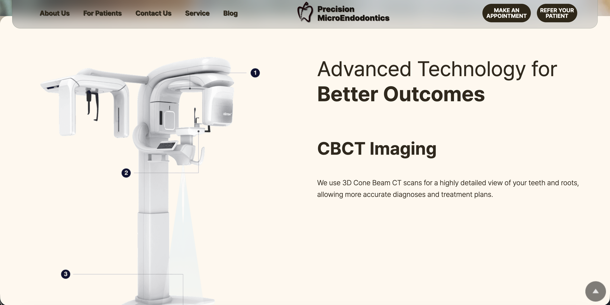
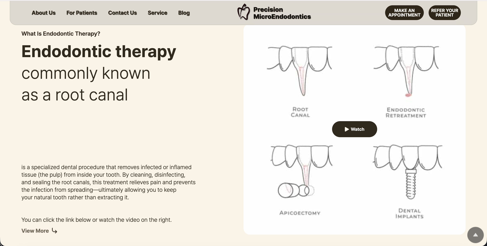
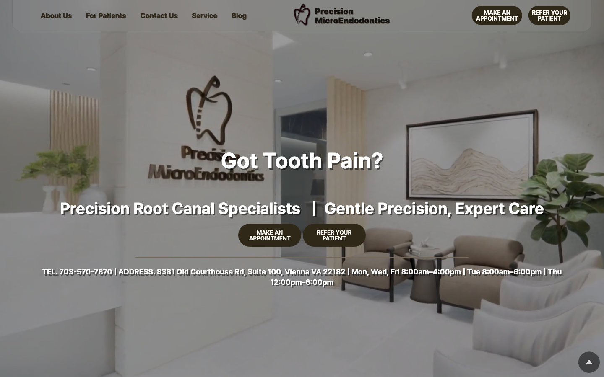

precisionrct.com / about

precisionrct.com / services

precisionrct.com

01 / 05
Washington D.C. dental clinic · Lead Developer · 100% remote · 01/2024 – 05/2026
PrecisionMicroEndodontics Solo, remote
Led a Washington D.C. endodontic clinic's site end-to-end, 100% remote from Seoul. Strategy, design, dev, SEO, hosting — 2 years 5 months without downtime, then handed off cleanly to automation (01/2024 – 05/2026).
- Built the static pages as a PHP + JSON-file content rendering system. Designed the publishing, categorisation, and URL structure from scratch
- jQuery + Bootstrap 5 + Animate On Scroll for responsive design and cross-browser stability. Readability and accessibility first, as a patient-facing medical site
- Improved Google search ranking through keyword-driven content, metadata, sitemap, and OG tags (Vienna, VA local SEO focus)
- Ran the SiteGround managed hosting, domain, SSL, backups, and incident response personally. 2 years 5 months uptime, then automated handoff
PHPJSON file renderingjQuery
Bootstrap 5Animate On ScrollHTML / CSS
SiteGround HostingFigmaNotionGitHub
precisionrct.com